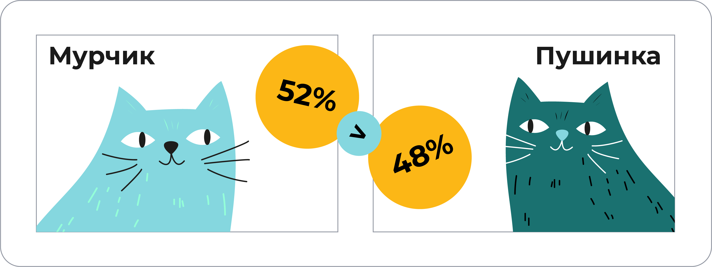
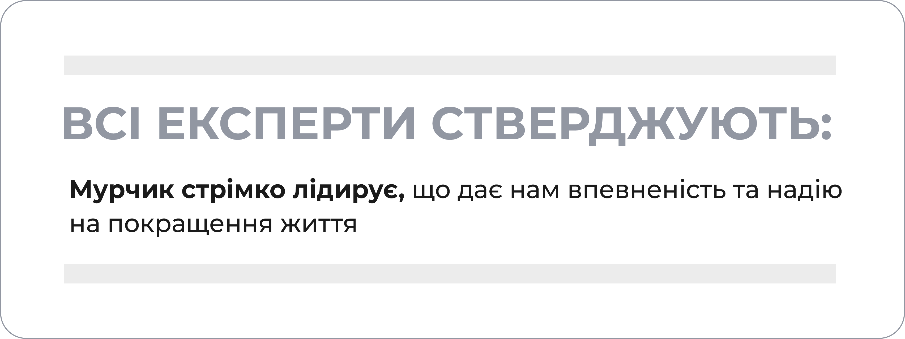
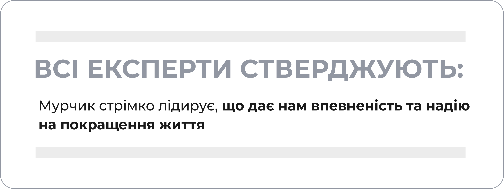
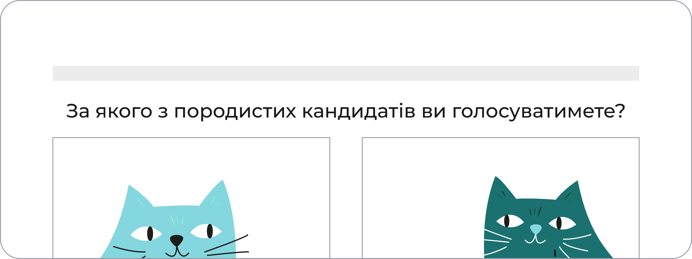
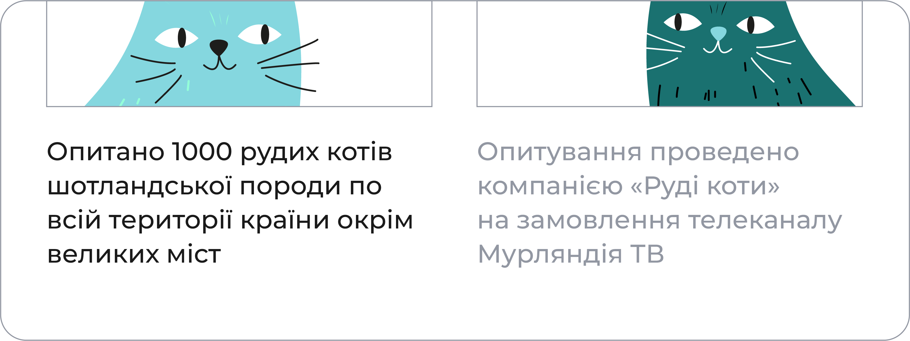
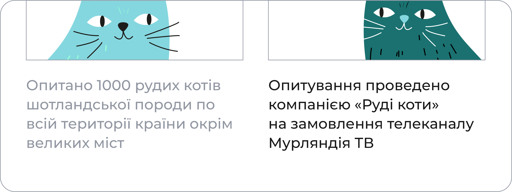
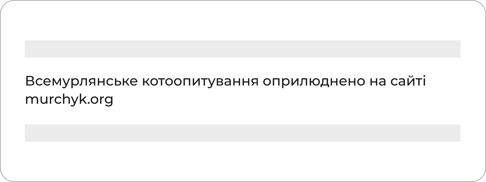

ОПИТУВАННЯ
ГРОМАДСЬКОЇ ДУМКИ
ВСІ ЕКСПЕРТИ СТВЕРДЖУЮТЬ:
Мурчик стрімко лідирує, що дає нам впевненість та надію на покращення життя
За якого породистих кандидатів ви голосуватимете?

Опитано 1000 рудих котів шотландської породи по всій території країни окрім великих міст
Опитування проведено компанією «Руді коти» на замовлення телеканалу Мурландія ТВ
Всемурляндське котоопитування оприлюднено на сайті murchyk.org
Проаналізувати
Яка думка повинна першою промайнути в твоїй світлій голові?
Обери відповідь і натисни "Підтвердити".
Чи дійсно ВСІ стверджують це?
ВСІ це стверджують, значить я довіряю ВСІМ!
Підтвердити
Завжди піддавай сумніву опитування та будь-які публікації, де "всі експерти" мають однакове твердження.
Далі

Чи є у цих словах об'єктивна оцінка чи лише чиєсь судження?
Обери відповідь і натисни "Підтвердити".
Стрімке лідерство можна і виміряти, напевно...
Це судження та навіювання, допоки припущення автора не стало реальністю
Підтвердити
Такі впевнені слова про стрімке лідерство є нічим іншим як судженням та навіюванням.
Далі

Який висновок міг би випливати з того, що Мурчик лідирує?
Обери відповідь і натисни "Підтвердити".
То написано ж, на нас чекає покращення життя
Логічний висновок, що він обходить іншого кандидата
Підтвердити
Результати опитування, звісно, нічого не можуть казати про зміни у якості життя. Це маніпуляція емоціями та висновками.
Далі

Якщо один кандидат породистий, а інший – ні. Чи схиляє це запитання віддати голос за першого?
Обери відповідь і натисни "Підтвердити".
Так
Ні
Підтвердити
Насправді, таке провокативне запитання схиляє голосувати саме за породистого кандидата. Така маніпуляція неприпустима у опитуваннях.
Далі
Чи має в тобі прокинутися сумнів щодо достовірності опитування, якщо в опитуванні не вказано можливої похибки?
Обери відповідь і натисни "Підтвердити".
Цифри завжди є точними, аж до однієї сотої
Завжди може бути похибка у декілька відсотків
Підтвердити
Розмір похибки обов'язково повинен зазначатися в опитуванні. Наприклад, тут могла бути похибка у 4%. Тоді виходить Мурчик зовсім не має переваги!
Далі

Що не так з опитуванням лиш однієї породи котів у всій країні?
Обери відповідь і натисни "Підтвердити".
Усе так, шотландські коти дуже розумні
Одна група котів не висловлює думку інших порід по всій країні
Підтвердити
Тут відбувається маніпуляція вибіркою. Висновки опитування не відображають позиції всієї країни. Це лише думка окремої групи котів.
Далі

Чи не здається тобі, що Мурчик тісно пов'язаний з телеканалом Мурляндія ТВ?
Обери відповідь і натисни "Підтвердити".
Мурчик дійсно може мати зв'язки з цим каналом, чи навіть бути його власником
Ой, знову ці теорії змови. Може, власницею є Пушинка, хоч вона і не руда
Підтвердити
Замовник та виконавці опитування можуть бути пов'язані з інтересами Мурчика. Завжди перевіряй такі зв'язки!
Далі

А як щодо сайту, чи має, на твою думку, Мурчик і з ним зв'язок?
Обери відповідь і натисни "Підтвердити".
та це знову Пушинка казиться
myrchuk.org досить промовисто відображає інтереси Мурчика
Підтвердити
З огляду на назву, публікація розміщена на сайті Мурчика та, звісно, в його інтересах. Проте завжди перевіряй, чи випадково не належить цей сайт опоненту, фейкові та підставні сайти теж бувають!
Далі
Читаючи опитування, запитуй себе:
Хто проводив опитування?
Хто його замовник?
Яка похибка в даних? Хто публікує результати?
Чи вибірка репрезентативна?